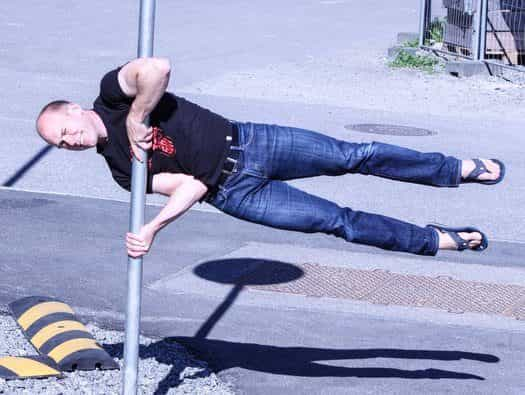
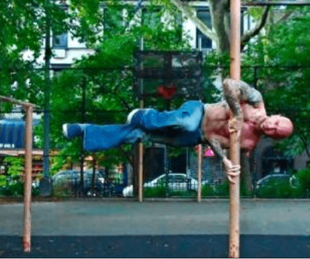

The human flag is likely an exercise that you have seen in some pop culture creation, but can scarcely believe is an exercise that people actually do. Considering that the vast majority of this exercise’s pop culture appearances are in superhero comics, action movies, and other fantastical forms of media, I wouldn’t blame the average fitness enthusiast for assuming that this isn’t an exercise that people can actually do. Indeed, I certainly thought when I was younger that this was a “fake exercise” that had somehow become a meme amongst the dyspeptic nerds that draw superhero comic books.
As it turns out, however, the human flag is, in fact, a real exercise that you can accomplish with enough time and effort.

Why Do It?
The human flag is a great method of training the entire upper body, from the hips to the arms and shoulders, and everything in between. It also gives some auxiliary work to the lower body and the muscles of the spine. Holding the body rigid against the force of gravity itself provides a tremendous workout for all muscles involved.
In addition to its practicality, it just looks cool and impressive. I guarantee that nobody else in your gym is doing the human flag in their workouts, and you’ll get respect and admiration from both sexes. And why wouldn’t you want that?
Last, and arguably best of all, this exercise costs you literally nothing to do—as long as you have some sort of vertical pole you can wrap your hands around, you can do the human flag. You do have a vertical pole near you, don’t you?
The Two Types of Flag
As the heading states, there are two types of human flag: the clutch flag and the hang flag, arranged in order of increasing difficulty. The clutch flag, while by no means easy to master, is vastly easier than the hanging flag.
As such, this article will deal with the clutch flag, and a later article will deal with the hanging flag.
The Steps
Before we can actually start doing the clutch flag, we have to learn how to set it up by doing a clutch hang. To do this, approach your vertical pole and stand to its side. Extend your stronger arm straight out, and sort of wrap it around and curl it back over the pole, tucking the pole into the armpit. Simultaneously grasp the pole with your hand, making sure to point the thumb downwards
Then with the other hand, grasp the pole around hip or stomach level, making sure to keep your thumb up. This arm (the elbow more specifically) will act as support in the exercise, bolstering your body by jutting against the hip and making the clutch flag much easier than the hanging flag, in which only your arms and shoulder girdles support the body weight.
With your arms in the proper position, shift your body weight forward until your feet leave the ground. Do not twist your body or otherwise try to make it horizontal, just get off the ground and hold. This is the clutch hang.
As with most static holds I teach you, when you are capable of holding this for ten seconds, you can move on. Now you truly begin to incorporate the lower body. The tuck flag has you take the clutch position, then pull and tuck your knees as high as you can. Your body will likely be diagonal to the ground at this point—that is completely acceptable.
Then we will do the half tuck. Take the tuck position you did previously, and then extend one leg (typically the stronger leg) out and off the ground, while keeping the other leg tight and tucked. If you cannot do this, just extend the strong leg as far as you can, gradually building up inch by inch. Next, the fully extended diagonal flag starts with a tuck flag and then extends both legs fully out and diagonal. Similarly to the other steps, if you can’t do this at first, extend the legs gradually.
After this, you begin holding the body horizontally in all subsequent steps. The first step of this series is the horizontal tuck. Take the clutch hold, and then twist and lift your body up and horizontal. Try to imagine bringing your hips up and in line to the strong arm.
From here, the steps are largely what you would expect based on the steps of the diagonal tuck exercise. The first step is to extend one leg and tuck the other leg, gradually extending it by inches if you can’t do it. Then, if need be, extend both legs halfway

And finally, once you can hold the preliminary steps for at least ten seconds, try to extend your legs fully. Personally, I find that if you tuck your legs and then extend your legs out quickly and forcibly, it’s easier than if you were to try to raise your legs up from a standing position, or extend them slowly. As usual, if you can’t do it, extend them as much as you can and slowly build up.
Conclusion
And with that, you have mastered the clutch flag. While tricky, it’s not nearly as difficult as you’d think, and it’s very impressive to the lay person. Plus, it provides a necessary prerequisite to the hanging flag which is a whole ‘nother, much more difficult beast, which perhaps we will deal with another time.
Read More: How To Start Training The Front Lever For Strength And Flexibility